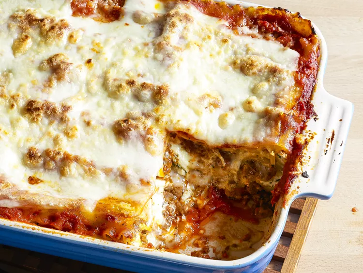

lasagna
Odin Lasagna
Odin Recipes

Ingredients You'll Need for Lasagna:
- Toasted Garlic Bread
- Tomato Mozzarella Salad
- Easy Arugula Salad
- Quick and Easy Sautéed Spinach
- Garlic Butter Mushrooms
- How to Reheat Lasagn You can use the microwave to reheat lasagna if you're in a pinch or short on time, but be aware that it will change the texture of the noodles.
- The best way to reheat lasagna is in the oven. Simply cover the leftovers with foil and bake at 350 degrees F for about half an hour, or until it's heated through and the sauce is bubbly.
- How to Freeze Lasagna If you're planning to freeze lasagna, it's best to cook it in a foil baking dish. Allow the casserole to cool, then cover the whole thing in at least one layer of storage wrap. Wrap it again in aluminum foil to prevent freezer burn. Freeze for up to three months.
- How to Reheat Frozen Lasagna Thaw the frozen lasagna in the refrigerator overnight, then follow the reheating instructions above. If you don't have time to thaw in the fridge, you can reheat it from frozen—just make sure to add a few minutes to the cook time to ensure the dish is heated through.
All recipes Community Tips and Praise
- "We live in St. Louis where we have fabulous Italian food," says meyerrachelle.
- "This lasagna could've come from any of the well-known restaurants in our area.
- "My family was raving about it! The sauce is absolutely amazing!"
- This is definetely a keeper! It lives up to its name."
- "The sweet Italian sausage and ground beef combo along with the sauce were very flavorful," says one Allrecipes community member.
- "Yeah it may take a while but it is so worth it.
- Team it with garlic bread and a salad and you'll be very satisfied."
- "Absolutely phenomenal," raves Amanda Simopoulos.
- "Fair warning: once you've made this, going back to a frozen lasagna will be impossible.
- It is somewhat time consuming but not difficult. My house smells delectable every time I make it!